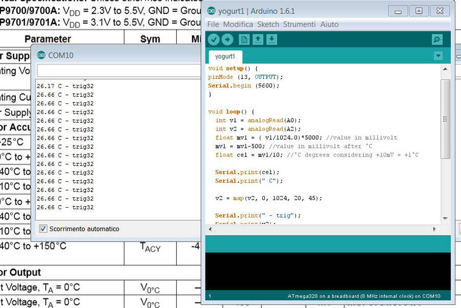

11. Output Devices
Second version
I fixed all the bugs I found on the previous version and made a more dense board.

Here the eagle file:
The idea was to keep the temporary connections just to programm and debug the board and then remove them
Debugging V2
Before trying to power it I checked for short circuits and I there was one between Vin and GND. The most likely place would have been under the microcontroller, but being the harder to fix i decided to test everything else before desolder it and change it.
I took pics of the connection and marked between one and the other with a cutter. From the picture, everyting seems fine
After that I cut the Vin that get to the microcontroller, to see where actually was the problem.
This helped me to realize that the problem wasn't the microcontroller, but something else. Luckly I had not so many connection to check and I found that a small copper wire form the desoldering braid, got stuck between two connections. I cleaned everything with a cutter and bridged the Vin with a 0 Ohm resistor.
Everything else went smoothly until I tried to programm it. I have been able to upload the sketch, but the timing was completely wrong and hard to predict (a 1000 millisecond loop could take from 6 to 14 seconds). Considering the position of the cristal capacitors wasn't exacly simmetrical, I thought that could be the problem, so I removed the capacitor and tested using the inner 8MHz cristal.
Still no good results... Next test was to use a ceramic oscillator. I had a 16 MHz smd oscillator and I soldered temporarely to check if it helped.
Even if it's not good looking I tested it and it was properly conneced with no short circuits.
Still nothing.
File Board.txt
Obviously everytime I tried a new configuration I edited the file Board.txt in the Arduino folder, and I had no problem to upload the sketch. The board was actually working the way it has to do, readint the sensor and the trigger, and turning on a led and the mosfet when the temperature was lower that the trigger's value.
Debugging the code
The board was working, still without the serial monitor, it was complex to debugging and remapping the values from the trigger to match the sensitivity of the temperature sensor. I sterted from the datasheet to understand the values readed. It said there is a typical variation of 10mV per °C, starting form 500mV at 0 °C.
I also checked the values and the variation directly from the sensor, using a multimeter.
In the end the calibration was approximative but effective. I tested it turning on and off a light pointing to the sensor (to warm it up). It behaved as expected: at room temperature the sensor turned on the mosfet, and therefor, the lamp. After a while this incresed the temperature and the sensor turn it off as a consequence.
Being something I needed, I decided to keep it like this and desolder the connectors to be programmed. Here the result
Fixing the serial comunication
Following a suggestion of Simone Boasso, I tried restarting from the upload of the bootloader, using a project of an Arduino on breadboard, published on instructables. This was a project that run with the internal 8 MHz clock.
When I first tried to upload this, Arduino IDE gave me an error message, because no bootloader.tool parameter were set. After some try and error I got to this configuration
atmega328bb.name=ATmega328 on a breadboard (8 MHz internal clock) atmega328bb.upload.protocol=stk500 atmega328bb.upload.tool=avrdude atmega328bb.upload.maximum_size=30720 atmega328bb.upload.speed=57600 atmega328bb.bootloader.tool=avrdude atmega328bb.bootloader.low_fuses=0xE2 atmega328bb.bootloader.high_fuses=0xDA atmega328bb.bootloader.extended_fuses=0x03 atmega328bb.bootloader.path=arduino:atmega atmega328bb.bootloader.file=ATmegaBOOT_168_atmega328_pro_8MHz.hex atmega328bb.bootloader.unlock_bits=0x3F atmega328bb.bootloader.lock_bits=0x0F atmega328bb.build.mcu=atmega328p atmega328bb.build.f_cpu=8000000L atmega328bb.build.core=arduino:arduino atmega328bb.build.variant=arduino:standard
In particular I had to modify the extended_fuses following the request in the error messages of Arduino IDE.
After that i reupladed the sketch and the serial monitor was working perfectly.

This allowed me to fix minor issues and calibrate the sensor better. The final Arduino sketch is here:
void setup() {
pinMode (13, OUTPUT);
Serial.begin (9600);
}
void loop() {
int v1 = analogRead(A0);
int v2 = analogRead(A2);
float mv1 = ( v1/1024.0)*5000; //value in millivolt
mv1 = mv1-500; //value in millivolt after °C
float cel = mv1/10; //°C degrees considering +10mV = +1°C
Serial.print(cel);
Serial.print(" C");
v2 = map(v2, 0, 1024, 20, 45);
Serial.print(" - trig");
Serial.print(v2);
Serial.println();
if (v2 > cel)
{
digitalWrite (13, HIGH);
}
else
{
digitalWrite (13, LOW);
}
delay(5000);
}
Final result
Few days after I received the heating pads I bought, it's just a resistor wire around a paper support, but it works.
I did a final test with the pads connected and it works perfectly: if the sensr reads a temperature lower that the trigger's value, it turns on the mosfet and, consequently, the pads.
These are warming up the sensor that will turn off the mosfet over a certain temperature. There is a delay of 5 seconds, just to don't turn on and off the pads too quickly.